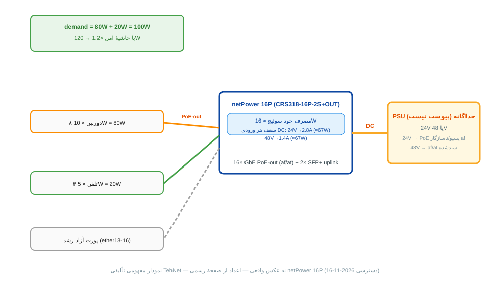

وضعیت درس: DRAFT / NOT_DEPLOYED — در انتظار مرور.
آموزش تصویری از سری switching و PoE؛ مخاطب: کارشناس شبکهٔ مبتدی تا متوسط.
سناریوی کاملاً فرضی و آموزشی با دادهٔ ساختگی؛ هیچ شبکهٔ واقعی دستکاری نشده است.
نمودار مفهومی و تألیفی است (نه عکس واقعی)؛ اجرای RouterOS این درس NOT_RUN است (بدون fixture مجاز).
بودجهٔ PoE = جمع مصرف ماکسیمم همهٔ دستگاههای PoE + حاشیهٔ امن (~۲۰٪) و باید از «توان قابلتامین PSU منهای مصرف خود سوئیچ» کوچکتر باشد. سه چیز را همزمان چک کنید: استاندارد (دستگاه af است یا at؟)، ولتاژ/جریان (PSU چه ولتاژی میدهد و سوئیچ هر پورت/مجموع چند آمپر اجازه میدهد؟) و PSU (بعضی سوئیچها مثل netPower 16P اصلاً PSU ندارند). اگر جمع از بودجه گذشت، راهحل دوتاست: مصرف واقعی را دقیق بگیرید یا به سوئیچ/PSU بزرگتر مهاجرت کنید — نه کاهش حاشیهٔ امن.
| مشخصه | مقدار رسمی (صفحهٔ محصول netPower 16P) | SKU رسمی |
|---|---|---|
| SKU | netPower 16P (CRS318-16P-2S+OUT) | — |
| پورت PoE-out | 16× Gigabit (همهٔ ۱۶ پورت مسی PoE-out دارند) | ether1-16 |
| آپلینک | 2× SFP+ (فیبر 10G) — PoE ندارند | sfp-sfpplus1/2 |
| استاندارد PoE-out | 802.3af/at | — |
| ولتاژ PoE-out | بدون مبدل داخلی: با PSU 24V خروجی 24V میشود؛ با PSU 48V خروجی 48V (برای af/at) | ورودی DC: 18-30V یا 48-57V |
| سقف جریان هر پورت | 24V: 1.1A (≈26W) · 48V: 0.6A (≈29W) | derived از حد جریان |
| سقف جریان کل هر ورودی DC | 24V: 2.8A (≈67W) · 48V: 1.4A (≈67W) | derived؛ دو ورودی DC مستقل |
| PSU پیوست | ندارد — «Power supply is NOT included with the product» | PSU جداگانه الزامی |
| Max power consumption | 316W (با متعلقات) · 16W بدون متعلقات | مصرف خود سوئیچ ≈16W مبنا |
نکتهٔ صادقانه دربارهٔ بودجهٔ نهایی: رابطهٔ بین «سقف جریان هر ورودی DC» و رقم «Max consumption 316W» در صفحهٔ رسمی تفصیل داده نشده (وابسته به جفت-PSU و ولتاژ). این درس هر دو عدد را عیناً گزارش میکند و محاسبه را با «حد جریان ورودی» انجام میدهد — محافظهکارانهترین تفسیر سندشده. رقم 316W بهعنوان سقف سیستم با PSU جفت مناسب ثبت میشود؛ UNKNOWN: بودجهٔ دقیق PoE-out تضمینشده برای هر ترکیب PSU — نیازمند تأیید رسمی ( marked UNKNOWN، نه حدس).
| دستگاه | تعداد | مصرف ماکسیمم فرضی هر واحد | استاندارد موردنیاز | جمع |
|---|---|---|---|---|
| دوربین IP (بدون ایرلایت/هیزر) | 8 | 10W | af کافی (≤15.4W) | 80W |
| تلفن IP | 4 | 5W | af | 20W |
| جمع PoE demanded | — | — | — | 100W |
فرض صریح: ارقام 10W/5W «مصرف ماکسیمم تیپیکال»اند نه مقدار تضمینی سازنده؛ قبل از خرید، datasheet همان مدل دوربین/تلفن ملاک است. دوربین با هیزر/IR بلند، تا 25-30W میرود (at لازم) — در این مبنا نیست.
| سوئیچ | پورت | اتصال | PoE |
|---|---|---|---|
| netPower 16P | ether1-8 | 8 دوربین | af/at خروجی |
| netPower 16P | ether9-12 | 4 تلفن | af خروجی |
| netPower 16P | ether13-16 | آزاد (رشد) | — |
| netPower 16P | sfp-sfpplus1 | آپلینک 10G به روتر/سوئیچ بالادست | بدون PoE |

شرح متنی نمودار (جایگزین تصویر برای دسترسپذیری): از راست: PSU جداگانه (۲۴ یا ۴۸ ولت، پیوست نیست) → ورودی DC سوئیچ netPower 16P → داخل سوئیچ دو مسیر: مصرف خود سوئیچ (≈16W) و خروجی PoE با سقف جریان هر ورودی (24V: 2.8A ≈ 67W · 48V: 1.4A ≈ 67W) → از پورتها به ۸ دوربین (۸۰W) و ۴ تلفن (۲۰W) و پورتهای آزاد رشد. حاشیهٔ امن ۲۰٪ روی جمع demand نمایش داده شده و برچسب «تألیفی/مفهومی» پایین تصویر هست.
۱) جمع demand: Σ(مصرف ماکسیمم هر دستگاه) = 80 + 20 = 100W
۲) حاشیهٔ امن ۲۰٪: demand × 1.2 = 100 × 1.2 = 120W
۳) توان قابلتامین: PSU − مصرف خود سوئیچ = PSU_W − 16W
۴) سقف ورودی DC: 24V → 2.8A (≈67W) · 48V → 1.4A (≈67W) per input
۵) قبول/رد: (۳) ≥ (۲) و سقف پورت هر دستگاه تأمین باشدپرچم ناسازگاری برای مرور: سناریوی مقالهٔ S1 همین مخزن (۱۲ دوربین + ۴ تلفن = 168W روی netPower 16P) با تفسیر محافظهکارانهٔ «حد جریان ورودی» که بالا آمد سازگار نیست؛ این درس عمداً تفسیر سندشده را مبنا گرفت و ناسازگاری را بهجای پنهانکردن، پرچم میزند — تصمیم اصلاح مقالهٔ S1 با مرور مدیر.
| نشانه | علت محتمل | بررسی | راهحل |
|---|---|---|---|
| دستگاه بالا میآید و ریاستارت چرخهای میشود | demand لحظهای (surge) از بودجه گذشت | جمع ماکسیممها + حاشیه را بازمحاسبه کنید؛ `/interface ethernet poe monitor` | PSU بزرگتر/دوم؛ توزیع پورتها بین دو سوئیچ |
| دستگاه af اصلاً روشن نمیشود | PSU 24V نصب شده (خروجی 24V پسیو/ناسازگار با af) | ولتاژ خروجی پورت را چک کنید | PSU 48V برای af/at (سند رسمی: 48V برای IEEE af/at) |
| دوربین at با 24V بالا نمیآید | at به 48V نیاز دارد | استاندارد دستگاه | همان ردیف بالا |
| جمع حساب میشود ولی وسط روز افت دارید | مصرف واقعی > فرض تیپیکال (هیزر/IR شبانه) | اندازهگیری واقعی پورت | گرفتن ماکسیمم واقعی از datasheet/اندازهگیری |
| PSU گرم/خاموشی محافظتی | PSU زیر بار دائم نزدیک سقف خودش | توان اسمی PSU در برابر (۳) | PSU با توان اسمی ≥ (۲)+مصرف سوئیچ |
| پیوند | مقصد |
|---|---|
| درس قبلی (مبانی سوئیچ) | مقایسهٔ سوئیچهای CRS میکروتیک (S1) |
| درس مرتبط | VLAN برای دفتر کوچک (M2) |
| نقشهٔ کامل سری | topic map |
| طراحی/اجرای PoE برای سازمان شما | خدمات راهاندازی شبکهٔ تهران |
| درس بعدی سری | S3 — راهنمای SFP/DAC/فیبر (تولید در نوبت بعدی؛ فعلاً فقط در topic map) |